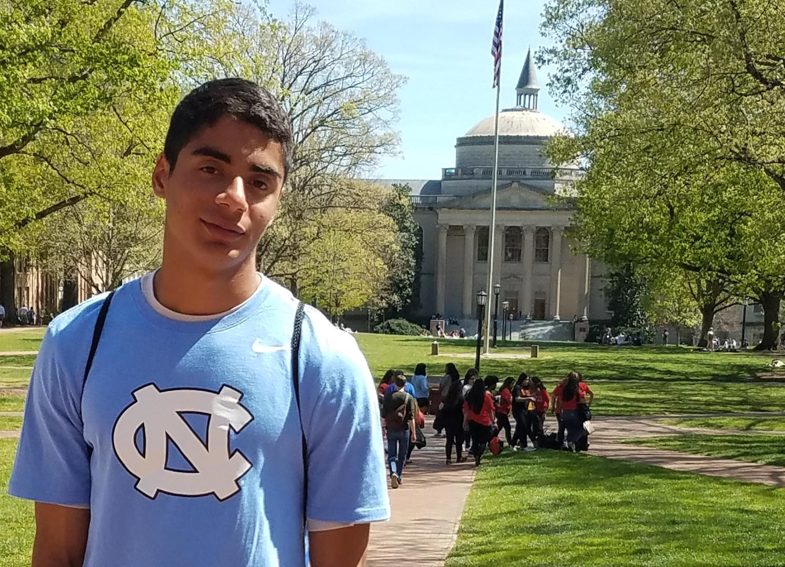

My name is Edward Trentzsch, and I am a student at the University of North Carolina at Chapel Hill. Born and raised in the irresistibly unique “All-America City” of Fayetteville, North Carolina, I am a native of the Tar Heel state and a firm believer that all roads eventually lead home to Carolina.  Despite the flaws and imperfections that sometimes place a shroud over this region of the country, I truly believe in the virtues that exist within the borders of these state lines. My goal for the future is to live a life uncovering the greatest triumphs and darkest failures within the local communities here because I believe that these stories have messages that need to be heard. I take pride in where I come from, and I hope to inspire others to do the same.
Want to learn more about my experience and talents? Check out my Resume!